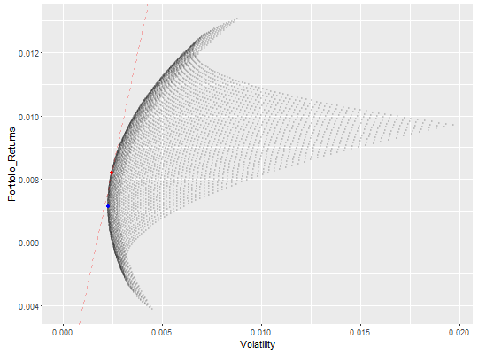

mvp(returns.xts, precision = 0.01, rfr = 0, rg = NA, plot = T, ...)
xts object about returns datasetMinimum variance portfolio & Market portfolio using returns xts dataset

Fund_1 Fund_2 Fund_3 Portfolio_Returns Volatility 4275 0.15 0.26 0.59 0.007140904 0.002295581 3704 0.16 0.37 0.47 0.008208795 0.002478640 Sharpe_Ratio Method Point_color 4275 2.675098 Minimum Variance Portfolio blue 3704 2.908367 Market Portfolio red